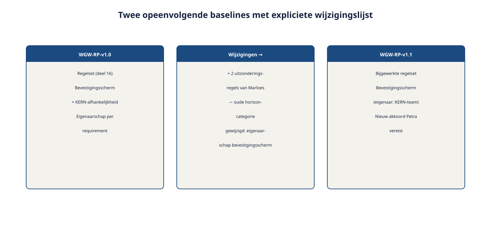

Cursus Requirements engineering · Niveau 2 (CPRE Advanced Level) · Deel 17 van 30
Attributen, prioritering en baselines.
In niveau 1 volstond een beheerbasis van vijf attributen voor één requirements engineer op één systeem. Bij Wegwijzer werken meerdere teams tegelijk aan requirements die van elkaar afhangen, en heeft niemand meer het complete beeld in zijn hoofd. Dit deel breidt de beheerbasis uit met eigenaarschap en afhankelijkheid, leert u prioriteren over deelsystemen heen, en introduceert de baseline — het vaste referentiepunt dat meerdere partijen nodig hebben om over dezelfde versie te kunnen spreken.
8secties
±2uleestijd + werkboek
8controlevragen
7attributen in de beheerbasis
Positionering. Deze cursus is een voorbereiding op de CPRE Advanced Level-certificering van IREB en is uitdrukkelijk geen vervanging van het officiële syllabus- en examenmateriaal van IREB, te raadplegen via ireb.org.
Niveau 2: 11 RE-strategie kiezen → 12 Stakeholderanalyse gevorderd → 13 Techniekkeuze programmaniveau → 14 Consolidatie en conflicthantering → 15 Modeling: context/doel/gedrag → 16 Modeling: data en beslisregels → 17 Attributen, prioritering en baselines (hier) → 18 Traceerbaarheid en impactanalyse → 19 Wijzigingsbeheer, meten en rapporteren → 20 AI4RE → 21 RE@Agile → 22 Examentraining + capstone
01
Waar dit deel over gaat
⏱ 8 min
Dit deel opent de Management-module van niveau 2 en daarmee spanningsveld 3: beheer over systeemgrenzen heen. Bij het Nabestaandenloket volstond de beheerbasis uit vijf attributen — identificatie, herkomst, status, versie, prioriteit — omdat Ruben als enige requirements engineer altijd het volledige beeld had. Bij Wegwijzer werken het Wegwijzer-team, het KERN-team en een extern vermogensbeheerplatform tegelijk aan onderling samenhangende requirements. Dat vraagt om meer discipline: wie is waarvoor verantwoordelijk, waarvan hangt iets af, en wat is op een gegeven moment de vastgestelde, gedeelde versie?
Aan het eind van dit deel kunt u:
de beheerbasis uit niveau 1 uitbreiden met eigenaarschap en afhankelijkheid;
prioriteren over deelsystemen heen, met de bijdragetoets tegen het programmadoelmodel;
een prioriteitsconflict tussen deelsystemen herkennen en op de juiste plek beleggen;
uitleggen wat een baseline is en waarom die op programmaniveau nodig is;
bepalen wanneer een nieuwe baseline wordt vastgesteld en hoe wijzigingen daarna worden behandeld.
02
De casus: "onmisbaar" dat niet gebouwd kan worden
⏱ 10 min
Bram Kessels vraagt Ruben om de Wegwijzer-requirements te prioriteren voor de eerstvolgende release. Ruben doet dat zoals hij het in niveau 1 leerde: de bijdragetoets tegen het doelmodel, vier categorieën. Het bevestigingsscherm voor het risicoprofiel komt eruit als "onmisbaar" — zonder dit kan een deelnemer zijn keuze niet vastleggen.
"Het bevestigingsscherm staat bovenaan, toch? Dat is wat ons betreft het kroonjuweel van deze release."
"Op zich klopt de prioritering — maar het scherm hangt af van een statusveld in KERN dat het KERN-team pas een sprint later inplant. We kunnen het niet bouwen vóór de releasedatum, hoe onmisbaar het ook is."
Rubens prioritering was op zichzelf correct — en toch onbruikbaar, omdat hij geen rekening hield met iets wat niveau 1 nooit hoefde te modelleren: afhankelijkheid tussen deelsystemen. Een prioriteitscategorie zegt iets over waarde; hij zegt niets over haalbaarheid binnen een gegeven termijn zolang die afhankelijkheid onzichtbaar blijft.
03
Twee nieuwe attributen: eigenaarschap en afhankelijkheid
⏱ 16 min
De beheerbasis uit niveau 1 — identificatie, herkomst, status, versie, prioriteit — blijft volledig van kracht. Op programmaniveau komen daar twee attributen bij.
Eigenaarschap. Welk team of deelsysteem is verantwoordelijk voor het realiseren van deze requirement? Bij het Nabestaandenloket was dit triviaal — één team, één systeem. Bij Wegwijzer moet elke requirement een aanwijsbare eigenaar hebben: het Wegwijzer-team, het KERN-team, of extern (het vermogensbeheerplatform, buiten eigen eigenaarschap).
Afhankelijkheid. Van welke andere requirement — in welk systeem — hangt deze af, en in welke richting? Het bevestigingsscherm hangt af van een KERN-aanpassing; die afhankelijkheid moet expliciet vastgelegd zijn, niet pas ontdekt worden bij de planning.
Figuur 17-1 — de zeven attributen van de uitgebreide beheerbasis — de vijf uit niveau 1 plus eigenaarschap en afhankelijkheid
Zonder deze twee attributen ziet prioritering eruit als een geïsoleerde keuze binnen één systeem. Met deze twee attributen wordt zichtbaar dat prioriteit op programmaniveau een gedeelde aangelegenheid is: een requirement kan pas werkelijk "onmisbaar voor de release" zijn als ook de requirement waarvan hij afhangt op tijd gereed is.
Controlevragen
Uit Werkboek deel 17, Opdracht 17.1 — Eigenaarschap en afhankelijkheid invullen
1Wie is eigenaar van "het tonen van de risicoprofieluitkomst aan de deelnemer", en waarvan hangt deze requirement af?Toon antwoord
Eigenaarschap: Wegwijzer-team. Afhankelijk van de rekenregels (Marloes) en het datamodel (deel 16).
2Wie is eigenaar van "het doorgeven van een bevestigd risicoprofiel aan het vermogensbeheerplatform", en wat is bijzonder aan de afhankelijkheid?Toon antwoord
Eigenaarschap: Wegwijzer-team. Afhankelijk van het berichtformaat van het vermogensbeheerplatform — extern, dus buiten eigen eigenaarschap. Dit laat zien dat een afhankelijkheid soms extern is en dus niet onder eigen of een ander Meridiaan-team eigenaarschap valt; dat vraagt een andere aanpak (asynchrone consultatie) dan een interne afhankelijkheid.
04
Prioriteren over deelsystemen heen
⏱ 18 min
De vier prioriteitscategorieën uit niveau 1 — onmisbaar, belangrijk, wenselijk, later-met-reden — blijven het instrument. Wat verandert, is waartegen u toetst.
De bijdragetoets tegen het programmadoelmodel. De bijdrageketen op programmaniveau is vaak langer dan op systeemniveau. Prioritering moet dus niet alleen toetsen of een requirement bijdraagt aan het Wegwijzer-doelmodel, maar of die bijdrage via de volledige keten ook het programmadoel raakt. Een requirement die sterk bijdraagt aan een Wegwijzer-subdoel, maar waarvan de keten naar het programmadoel zwak is, verdient een andere prioriteit dan op Wegwijzer-niveau alleen zou lijken.
Afhankelijkheden wegen mee. Een requirement met hoge prioriteit maar een afhankelijkheid van iets dat niet op tijd gereed is, is in de praktijk niet uitvoerbaar binnen de beoogde termijn — ongeacht de prioriteitscategorie. Dit is geen reden om de prioriteit te verlagen; het is een reden om de afhankelijkheid zelf te agenderen, bij Bram, die over de samenhang tussen deelsystemen gaat.
Wanneer prioriteiten tussen deelsystemen botsen
Wegwijzer wil iets snel; het KERN-team heeft er, gezien hun eigen prioriteiten, geen capaciteit voor. Dit is een conflict dat eerst geduid moet worden: is dit een belangenconflict (beide teams begrijpen elkaar, maar de gedeelde capaciteit is simpelweg te krap) of een mandaatconflict (onduidelijk wie over de verdeling van gedeelde capaciteit beslist)? In de praktijk is het bij Wegwijzer meestal het laatste: geen van beide teams heeft mandaat over de capaciteit van de ander — dat mandaat ligt bij Bram Kessels als programmamanager.
Figuur 17-2 — een prioriteitsconflict tussen Wegwijzer en KERN, geduid volgens de driedeling uit deel 14, belegd bij Bram
Controlevragen
Uit Werkboek deel 17, Opdracht 17.2 — Prioriteitsconflict duiden
3Wegwijzer wil de vragenlijstwijziging in de eerstvolgende sprint, het KERN-team heeft er pas over twee sprints capaciteit voor. Belangen- of mandaatconflict, en wie beslist?Toon antwoord
Belangenconflict — de capaciteit is simpelweg krap, er is geen onduidelijkheid over wie beslist. Belegd bij Bram Kessels, die de afweging tussen deelsystemen maakt.
4Wegwijzer en KERN zijn het beiden eens dat de bevestigingsflow prioriteit verdient, maar er is geen budget om beide teams tegelijk extra capaciteit te geven. Belangen- of mandaatconflict, en wie beslist?Toon antwoord
Belangenconflict, met een budgettaire dimensie. Belegd bij Bram Kessels, mogelijk in overleg met Hetty over extra middelen.
5Niemand weet zeker of de planning van de vermogensbeheerplatform-koppeling onder Brams mandaat valt of onder een aparte, externe contractafspraak. Belangen- of mandaatconflict, en wie beslist?Toon antwoord
Mandaatconflict. Eerst vaststellen bij Bram of het contract met de externe partij, vóór verdere inhoudelijke afweging.
05
Baselines: waarom en wanneer
⏱ 14 min
Bij het Nabestaandenloket kon Ruben, als enige requirements engineer, altijd zeggen wat de actuele stand van zaken was — er was maar één bron van waarheid, in zijn hoofd en in zijn documenten. Bij Wegwijzer werken meerdere mensen tegelijk aan requirements die onderling samenhangen, en verandert de inhoud voortdurend. Zonder een vast referentiepunt wordt het onmogelijk om te zeggen "dit is de versie die we nu bouwen" of "dit is de versie die Petra heeft goedgekeurd".
Een baseline is een vastgestelde, bevroren versie van een requirementsset op een bepaald moment — een referentiepunt waarnaar u kunt teruggrijpen en waartegen u kunt bouwen, testen en formeel laten goedkeuren.
Waarom dit op programmaniveau essentieel is, en op projectniveau vaak nog impliciet kon blijven:
Meerdere partijen — Wegwijzer-team, KERN-team, Petra, het fondsbestuur — moeten het over dezelfde versie kunnen hebben.
Formele goedkeuring (Petra's zorgplicht-akkoord, het fondsbestuur's akkoord op het aantal risicoprofielen) heeft een vast, aanwijsbaar object nodig — u keurt geen bewegend doel goed.
Bouwen en testen hebben een stabiele referentie nodig; voortdurend wijzigende requirements tijdens de bouw leidt tot precies het soort chaos dat het Programma Mutatieplatform juist moet voorkomen.
Figuur 17-3 — een tijdlijn met meerdere baselines, elk met een vaststellingsmoment en een lijst van wat erna is gewijzigd
06
Baselines beheren en formele goedkeuring
⏱ 16 min
Wanneer stelt u een nieuwe baseline vast? Bij een natuurlijk afstemmingsmoment: een releasegrens, een formeel goedkeuringsmoment (Petra's akkoord, het fondsbestuur), of een vooraf afgesproken interval bij langlopende programma's. Niet bij elke kleine wijziging — dat zou het hele concept van een stabiel referentiepunt ondermijnen.
Wat gebeurt er met wijzigingen die na een baseline binnenkomen? Ze wachten, in beginsel, op de volgende baseline. Een uitzondering is mogelijk via het wijzigingsbeheerproces, voor wijzigingen die dermate urgent zijn dat ze niet kunnen wachten — maar dat is een bewuste uitzondering, geen gewoonte.
Hoe blijft de relatie tussen baselines traceerbaar? Elke baseline krijgt een eigen versie-identificatie, voortbouwend op het versie-attribuut uit niveau 1, met een expliciete lijst van wat er ten opzichte van de vorige baseline is gewijzigd, toegevoegd of verwijderd — en waarom.

Figuur 17-4 — twee opeenvolgende baselines met een expliciete wijzigingslijst ertussen
Baselines en formele goedkeuring
Petra's zorgplicht-akkoord en het fondsbestuur's akkoord op het aantal risicoprofielen zijn beide voorbeelden van goedkeuring die aan een baseline hangt, niet aan een los document of een mondelinge toezegging. Zodra Petra een baseline goedkeurt, betekent een latere wijziging aan die requirements — hoe klein ook — dat de vraag gesteld moet worden of haar akkoord nog geldt, of dat een nieuw akkoord nodig is. Dit is dezelfde discipline als "wie heeft mandaat", nu toegepast op het moment van goedkeuring zelf.
Controlevragen
Uit Werkboek deel 17, Opdracht 17.4 — Wanneer een nieuwe baseline?
6Het fondsbestuur wijzigt het aantal risicoprofielen na nieuwe wetgeving. Rechtvaardigt dit een nieuwe baseline?Toon antwoord
Ja. Een inhoudelijke wijziging die formele goedkeuring opnieuw vereist.
7Een tekstuele correctie in een schermtekst, zonder inhoudelijke wijziging. Rechtvaardigt dit een nieuwe baseline?Toon antwoord
Nee. Geen inhoudelijke wijziging; wacht op het eerstvolgende natuurlijke moment, of wordt licht bijgehouden zonder volledige herbaseline.
8Er wordt een nieuwe, dringende wettelijke eis van kracht die vóór de volgende geplande releasegrens moet zijn verwerkt. Rechtvaardigt dit een nieuwe baseline?Toon antwoord
Ja, als uitzondering via het wijzigingsbeheerproces. Urgentie rechtvaardigt een tussentijdse baseline, mits bewust en niet als gewoonte.
07
Toegepast op Wegwijzer
⏱ 12 min
Een baseline voor het risicoprofiel-onderdeel van Wegwijzer, na het besluit over het aantal risicoprofielen:
Baseline-identificatie: WGW-RP-v1.0, vastgesteld na akkoord van het fondsbestuur op het aantal risicoprofielen en Petra's zorgplicht-toetsing.
Bevat: de gekozen regelset, het bevestigingsscherm-requirement met KERN-afhankelijkheid expliciet vermeld, en de eigenaarschap per requirement (Wegwijzer-team of KERN-team).
Prioritering: het bevestigingsscherm blijft "onmisbaar", maar de baseline-documentatie maakt de KERN-afhankelijkheid zichtbaar zodat Bram de twee teams kan afstemmen — in plaats van dat Ruben een prioriteit toekent die technisch niet haalbaar blijkt.
Wat verandert er als u iteratief werkt?
Baselines corresponderen in een agile programma vaak met releasegrenzen: sprints werken bínnen een baseline, aan de requirements die daarin zijn vastgesteld, en een nieuwe baseline markeert een groter afstemmingsmoment tussen deelsystemen — vaak samenvallend met een moment waarop meerdere teams hun voortgang synchroniseren. Dit is geen tegenspraak met agile werken; het is de manier waarop meerdere agile teams, elk met hun eigen sprintritme, toch een gedeeld, stabiel punt behouden om formele goedkeuring en cross-team afstemming aan op te hangen.
08
Terug naar de casus
⏱ 8 min
De episode waarmee dit deel opende — een "onmisbaar" scherm dat toch niet op tijd gebouwd kon worden — is nu geen ongeluk meer, maar een herkenbaar patroon: prioriteit zonder zicht op afhankelijkheid is onvolledige informatie. Met eigenaarschap, afhankelijkheid en de baseline heeft Ruben nu het instrumentarium om dat patroon vroeg zichtbaar te maken in plaats van het bij de planning te ontdekken.
Dit is nog niet het volledige antwoord op spanningsveld 3 — beheer over systeemgrenzen. Deel 18 werkt traceerbaarheid en impactanalyse verder uit over systeemgrenzen heen, inclusief hoe u impact bepaalt op een systeem dat u niet zelf beheert.
Verder met deel 18
U heeft de beheerbasis uitgebreid met eigenaarschap en afhankelijkheid, geleerd prioriteren over deelsystemen heen, en het instrument baseline toegevoegd aan uw gereedschapskist. Deel 18 bouwt hier direct op voort: traceerbaarheid en impactanalyse over systeemgrenzen heen, inclusief de aanpak voor een systeem — het vermogensbeheerplatform — dat u niet zelf beheert.